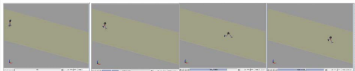
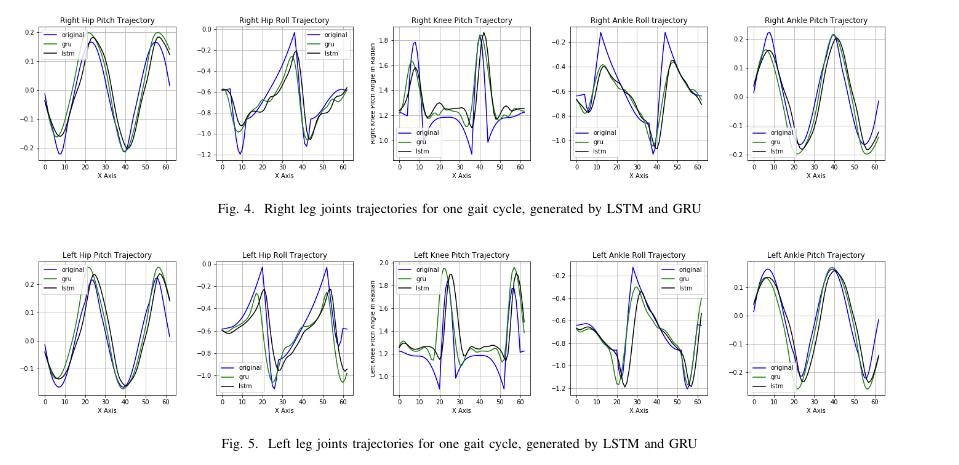
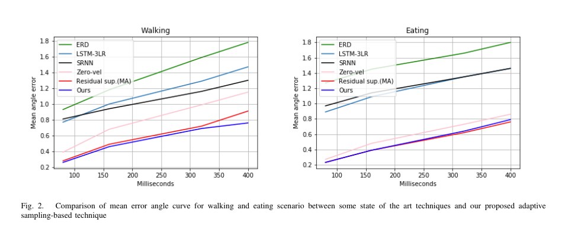

Gaurav Kumar Yadav
|
 |


Biography [CV]
I am pursuing my Ph.D. degree from the Department of Information Technology, Indian Institute of Information Technology Allahabad, in the supervision ofProf. G.C.Nandi. Before that, I received the M.Tech from Robotics at IIIT Allahabad in 2019 and B.Tech from Mechnical Engineering at IET Dr. R.M.L. Avadh University in 2016.
My research interests include Biped Locomotion, machine learning, data science, deep learning and computer vision.
News
- Received Best Paper Award in AI and ML track in CICT 2020.
Selected Publications [Google Scholar]
|  | Generic Walking Trajectory Generation of Biped using Sinusoidal Function and Cubic Spline. Gaurav Kumar Yadav, Shruti Jaiswal, G.C.Nandi 7th International Conference on Signal Processing and Integrated Networks (SPIN 2020), (IEEE Xplore). |
|  | Trajectory Learning for Stable Bipedal Walking Robots using Sequential Networks Gaurav Kumar Yadav, Shruti Jaiswal, G.C.Nandi. 7th IEEE Uttar Pradesh Section International Conference on Electrical, Electronics and Computer Engineering (UPCON 2020) (IEEE Xplore). |
|  | Development of Adaptive Sampling Based strategy for Human ActivityPredictions Using Sequential Networks. Gaurav Kumar Yadav, G.C.Nandi. 4th Conference on Information and Communication Technology (CICT 2020) (IEEE Xplore). |
Honors & Awards
| Teaching Assistant of Machine Learning, July'2019 to Nov'2019 |
| JRF Scholarship, 2019 onwards |
| Best paper award in AI and ML track in CICT 2020, 5th December 2020 |
© Gaurav Kumar Yadav | Last updated: December 2020